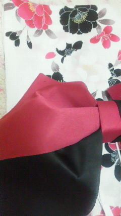

| 2012/06 15 Fri | ひめたん(* ゝω・*)ノ その167 |
明日は
個別握手会in東京
!
いよいよ始まりますねーおいシャン個握(^ω^)
ひめたんは1部と2部で握手するけ待ってますー♪
久々の個握ね。４月以来!
長くお話できるから、個握好きーよ。
あこの前のアンケートの話なんだけど、
今日好きになった人も、何年も前からひめたんがずっと好きな人も
みんな大切なひめきゅんさんよ(*^^*)

これからもよろしくお願いしまーすね♪
今日は握手会の質問をどどどどどーん(`・ω・')
 9日私誕生日だったからひめたんからお祝いして欲しいなぁ(
*
´艸｀)
9日私誕生日だったからひめたんからお祝いして欲しいなぁ(
*
´艸｀)
お誕生日おめでとう!
ステキな1年になりますようにー。
 握手の時とかに、「お兄ちゃん」って呼んでもらうのはアリかな？？
握手の時とかに、「お兄ちゃん」って呼んでもらうのはアリかな？？
アリだと思うよおにいちゃん♪
んー言ってみた(*^^*)
とにかく、ひめたんに向かってかわいくお願いしてみましょう。
 ひめたんが時々使う「ほえー」が好きなので、
ひめたんが時々使う「ほえー」が好きなので、
握手会で会ったら言ってくれますか？
ほえー♪
んー言ってみた(*^^*)
とにかく、ひめたんに向かってかわいくお願いしてみましょう。
...この返事の流れ、デジャヴ。わら。
握手会で何話せばいい？
何だろう。
何か聞きたいことがあったら質問とかも受け付けるし、
相談してほしいことあったらそれも聞くし、
何も話すことなければひたすら手握ってても、ね？
とにかく何でもオッケーよ☆
アイドルの握手会なんて一度も参加した事が無いけど、
ひめたんはいわゆる在宅ファンをどう思います？
やっぱり直接会いに来てくれる方が嬉しいですか？
正直に答えて！
あー確かに、ひめたん最近まで広島住んでたから、
好きなアイドルさんアーティストさんに会いに行くなんてできんかったけど
それでも、もし直接会えるんなら会いたいな。
やっぱり「いつもありがとう」って目を見て言いたいし。
 今度の個別握手会コスプレでセーラー服でお願いできる？
今度の個別握手会コスプレでセーラー服でお願いできる？
セーラー服かあ。ひめたんセーラー服持ってないんだ...。
ごめんね(>_<)
物真似、生で見てみたいなー（●＾o＾●）
他になにかレパートリーあるのかな？
物まねかあー...
ひめたんには
ななせまる
(西野七瀬chan)しかできんけれども。
ななせまるの物まねでいいんなら全力でやりますよ♪
握手会のあとに何かやってることとかある？
記憶の整理(ω)☆
女性の方と握手したことありますか？
あるあるいっぱいあります＼(^O^)／
女の子に好かれるの嬉しいよね。
あもちろん男の子に好かれるのも嬉しいよ!
女の子の握手会の特権は、ガールズトークができること。
俺はひめたんからしたらお兄さん何だけど下に弟しかいなくて
妹みたいなひめたんと上手く話せるか不安です...笑
ひめたんは普通にお友達だと思って、いつもコメントするようなノリで話してくれたら
全然問題ないと思うよー♪ひめたんフレンドリーだもーん
握手会でひめたんビームやってくれる？
個別の時に「ひめたんビーム」リクエストしてもいい？
握手会に行けば沢山ひめたんビームくらえるのかな??笑
握手会で会話がとぎれたらひめたんビームやってもらおうかな？
握手会で 俺もビームだしたら ひめたんビームやってくれる??
ひめたんビーム握手会とかでやってくれる？
握手会でひめたんビーム撃ってくれますか？
これいっちゃん多かった!
そんなこと言われたら本気でビーム飛ばしてやるー
救護室も用意してもらうからね？覚悟しときなさーいな(^O^)
ひめたんビームとさゆりんごパンチはどっちが強いの
さゆりんごぱんちと闘ったことないわぁ!
ちょっと闘ってみよかな♪
ちなみにさゆりんごビームとは闘ってみたことあるのよ。
どっちも強くていいかんじだった気がするよ確か♪

明日待ってるよ♪
(*´・ω・*)ひめたん
コメント(86)
2012/06/15 23:54